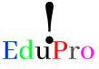
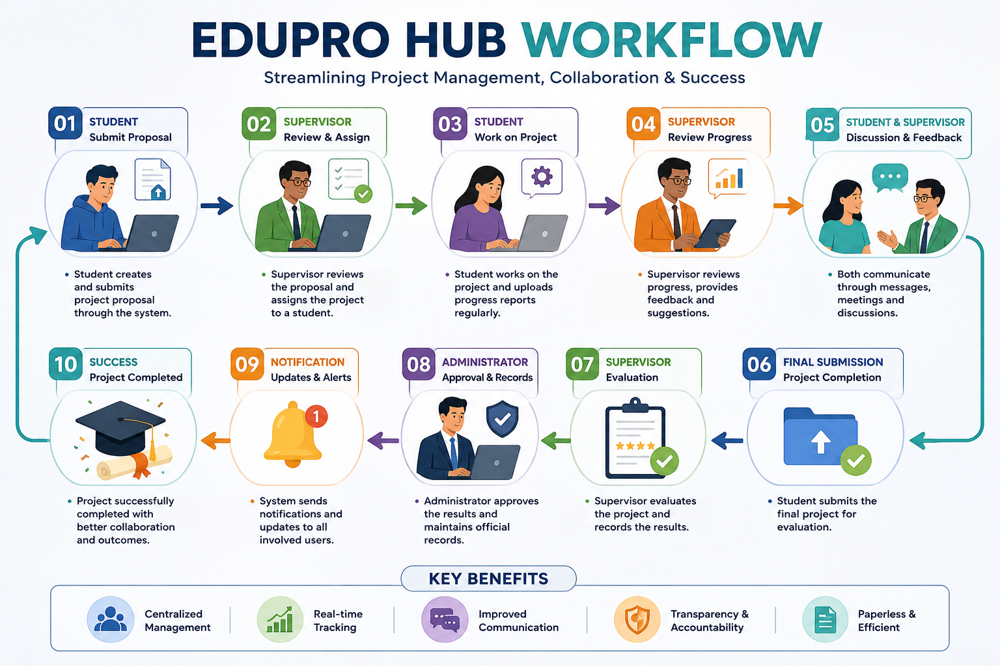

EduPro Hub is a comprehensive project management system designed to simplify supervision, collaboration, and tracking of student projects at the Uganda Institute of Information and Communication Technology (UICT). The system aims to promote efficiency, transparency, and accountability in academic project handling.
To enhance project management and academic collaboration through digital transformation, empowering students and supervisors to work efficiently.
EduPro Hub bridges the gap between students, supervisors, and administrators by providing a real-time project monitoring tool. It ensures structured communication, efficient workflow management, and better academic record-keeping.

